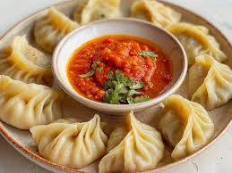

Momos

Description
"A steamed dumpling served in Nepal and Tibet, usually comes with a dipping sauce. Can be filled with either meat or veggies" - Daniel
Prep Time: 10 mins
Cook Time: 15 mins
Servings: 12
Ingredients
- 12 Dumpling wrappers
- 1 Chicken breast, minced
- ⅗ Cup of Coriander
- 2 Spring onions, finely chopped
- 1 Garlic cloves, minced
- 1 teaspoon Chilli powder
- 1 teaspoon Ground cumin
- ½ teaspoon Salt
- 1 teaspoon Olive oil
Directions
- Mix all the ingredients(except the wrappers) to form the filling, it should be a like a paste
- place a 2 teaspoons of the filling inside the wrapper and then fold the wrapper
- place the momos inside of a steamer and then cook for 10 minutes
return